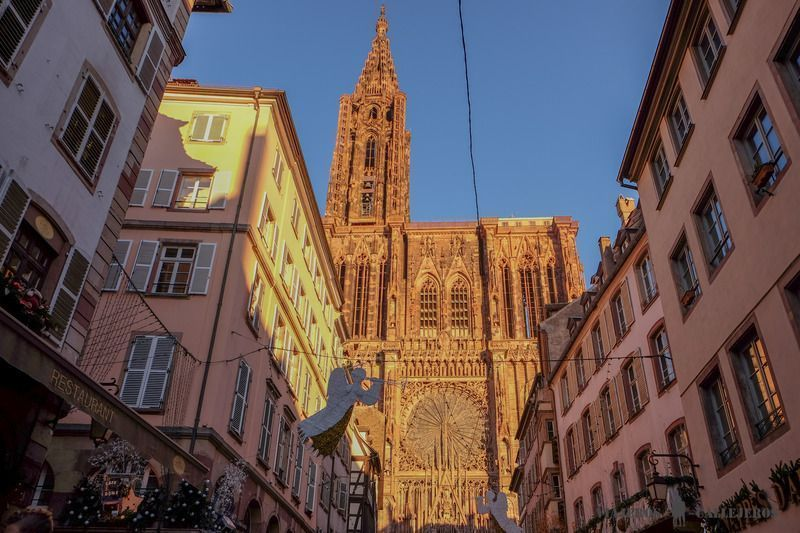
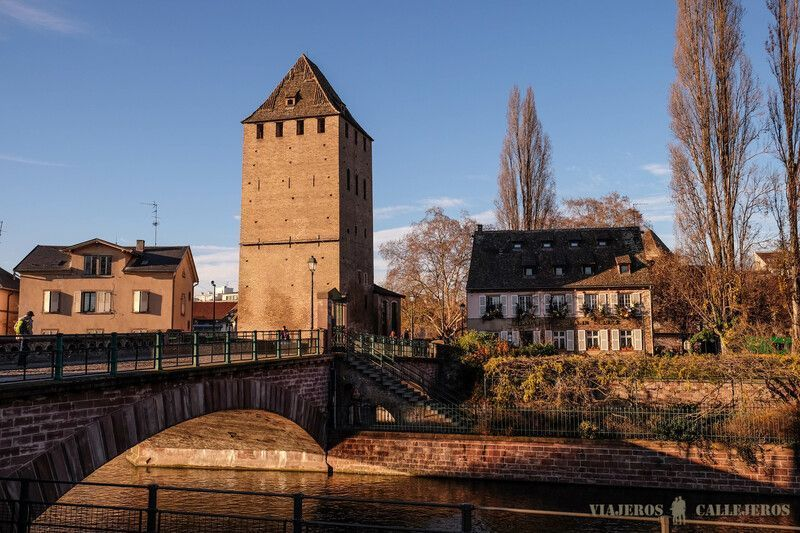
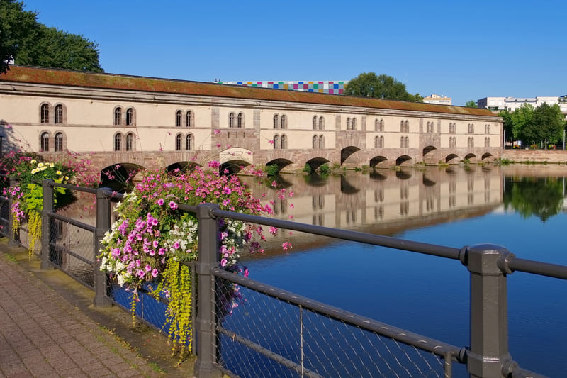
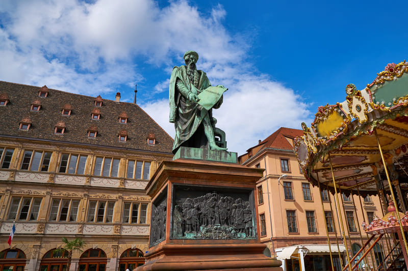
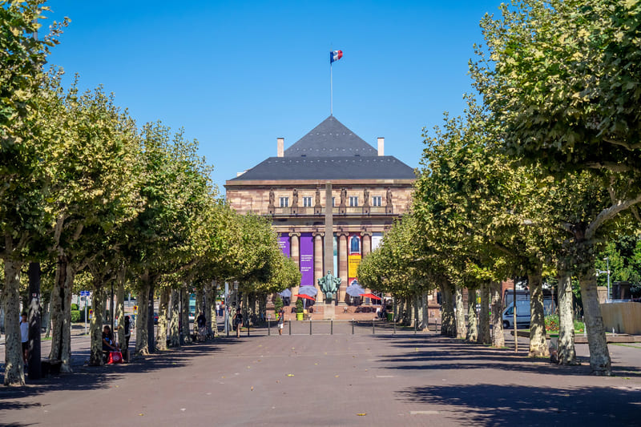
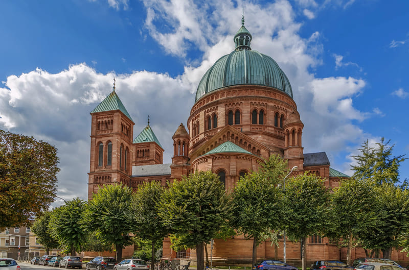
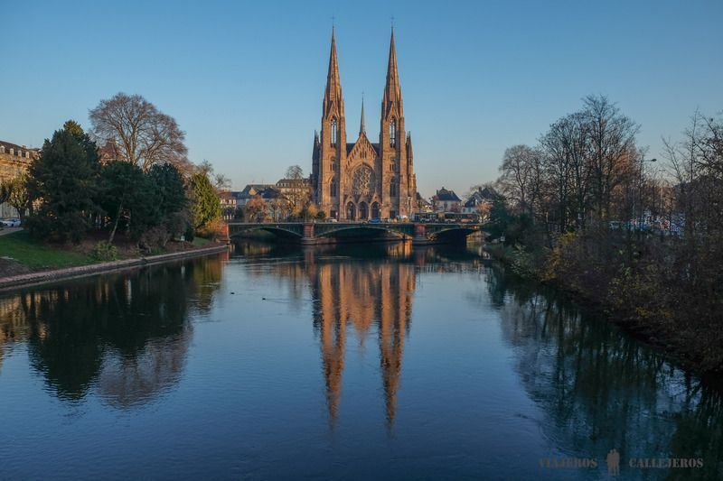
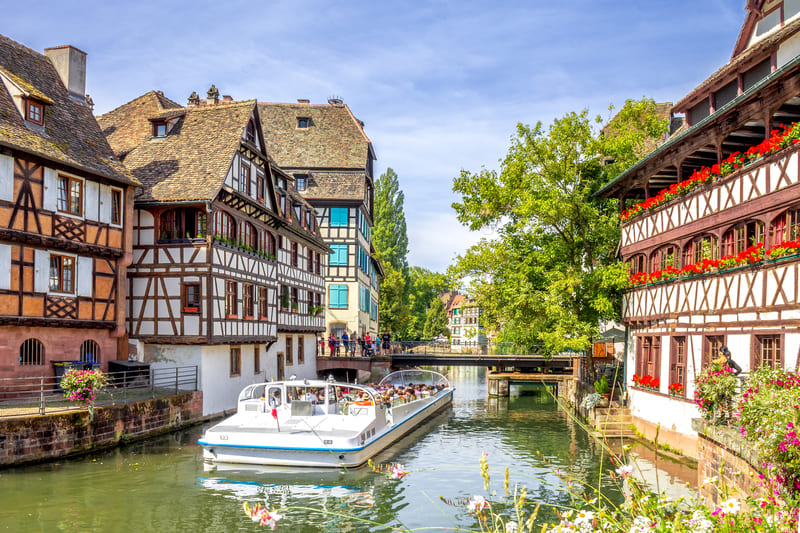

Guia turistica
¿Qué visitar en Estrasburgo?
Descubrí los lugares más icónicos de esta ciudad donde conviven la cultura francesa y la alsaciana
Descubrí los lugares más icónicos de esta ciudad donde conviven la cultura francesa y la alsaciana

La Catedral de Estrasburgo: es una joya del gótico construida con arenisca rosa de los Vosgos, cuya aguja alcanza los 142 metros de altura. La entrada al templo es gratuita, aunque el acceso a la plataforma panorámica y la visita guiada al reloj astronómico tienen coste.

La Petit France: Entre todas las casas típicas de La Petit France destaca la Maison des Tanneurs, una antigua casa de curtidores convertida en restaurante, que te recomendamos no perderte. Este barrio lleno de restaurantes, cafés y tiendas artesanales, es ideal para pasear por sus bonitas calles adoquinadas como rue des Moulins, tanto de día como de noche, cuando las luces iluminan las fachadas.

Pont Couverts Son un conjunto de tres puentes históricos y cuatro torres medievales situados en el límite del barrio de Petite France. Formaban parte del antiguo sistema de defensa de la ciudad, construido originalmente en 1230, aunque las cubiertas originales fueron eliminadas en el siglo XVIII.

Presa Vauban: Su acceso es gratuito y las instalaciones permanecen abiertas diariamente desde la mañana hasta la noche. La principal atracción es la terraza panorámica situada en la parte superior del edificio, que ofrece vistas espectaculares de los Ponts Couverts (Puentes Cubiertos), la Petite France y la Catedral de Notre-Dame. Desde la terraza, los visitantes también pueden contemplar exposiciones de arte y esculturas distribuidas en la estructura.

Plaza Gutemberg: es una de las plazas históricas y más importantes del centro de Estrasburgo, Francia, nombrada en honor a Johannes Gutenberg, el inventor de la imprenta, quien vivió en la ciudad entre 1434 y 1444.

Plaza Borglie: es una de las plazas más importantes del centro histórico de Estrasburgo, caracterizada por su forma rectangular alargada y su entorno arbolado. Se encuentra estratégicamente ubicada cerca de la Plaza Kléber y la Catedral, conectando la zona comercial con el casco antiguo.

Iglesia Sant Pierre ubicada en el barrio de la Neustadt de Estrasburgo, destacada por su gran cúpula de cobre que es la más grande de Alsacia. Fue construida entre 1889 y 1893 durante el periodo del Imperio Alemán para servir a la comunidad católica, separándola de la iglesia protestante homónima.

El Barrio aleman: Conocido como La Neustadt, es una zona residencial y administrativa al norte del casco histórico, diseñada por el Imperio Alemán entre 1871 y 1918. Declarada Patrimonio Mundial de la UNESCO en 2017, destaca por su arquitectura monumental de estilo neoclásico, neogótico y Art Nouveau.

Paseo en barcos: Desde esta zona también parten los paseos en barco que recorren los canales del río Ill, que sin duda, es otra de las mejores cosas que hacer en Estrasburgo.Estos recorridos que suelen durar una hora y disponen de audioguías en español, ofrecen una perspectiva única de lugares como la Catedral, el Palais Rohan, la Petite France, los Ponts Couverts y la Barrage Vauban.